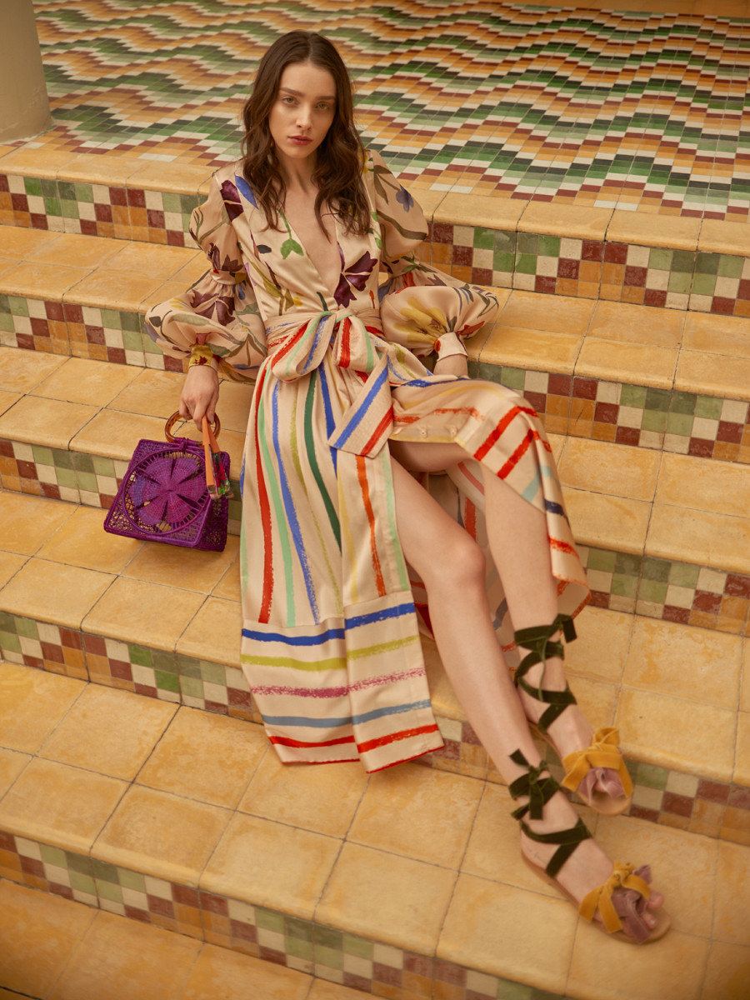
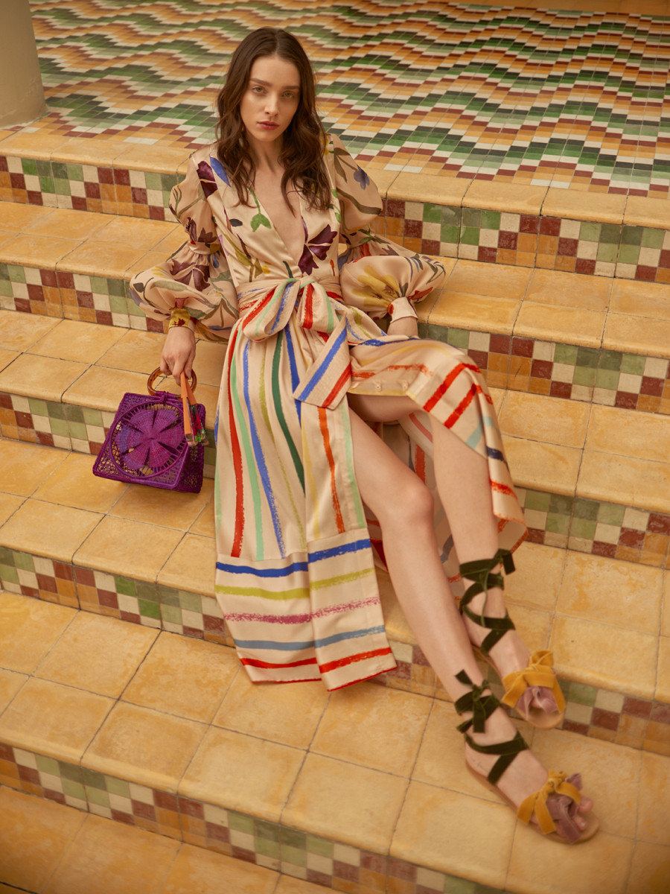

Somos una revista de arte colombiano, cuyo principal objetivo es mostrar y apoyar el trabajo de diferentes artistas que trabajan en el campo creativo, visual y artístico. Nuestro enfoque principal es hablar sobre nuevas tendencias en la moda y el arte local colombiano, con el fin de enriquecer y crear conciencia en las nuevas generaciones y así, crear una comunidad que no siga lo convencional.

Fotografía: Andrés Espinosa
Para Pink Filosofy
Con su última colección Primavera-Verano 2019, la reconocida diseñadora de modas Silvia Tcherassi, abrió con una extraordinaria pasarela, el Bogotá Fashion Week, que se celebró el 3 de abriel en el Centro de Convenciones Ágora. La colección caracterizada por colores, texturas y referentes europeos fue la sensación y una de las pasarelas más significantes para la familia Tcherassi. "Esta colección es una celebración al amor y a la poesía" - Cromos
 

Este outfit es la mezcla perfecta entre lo clásico y lo moderno. La tendencia por los cuadros y los abrigos está volviendo. Un toque cálido es perfecto para días grises.
.jpeg)
Este es un outfit sencillamente elegante, para ir al trabajo o para una cita. El azul es un color que empodera y demuestra modernidad.
.jpeg)
Este es un outfit casual, para estar en la calle, en un día tranquilo. Este Jumpsuit negro puede ir acompañado por varios elementos. Es comodo y práctico para cualquier actividad artística.
Realizado por: SAMUELPOLANÍASTUDIO
Bogotá, Colombia